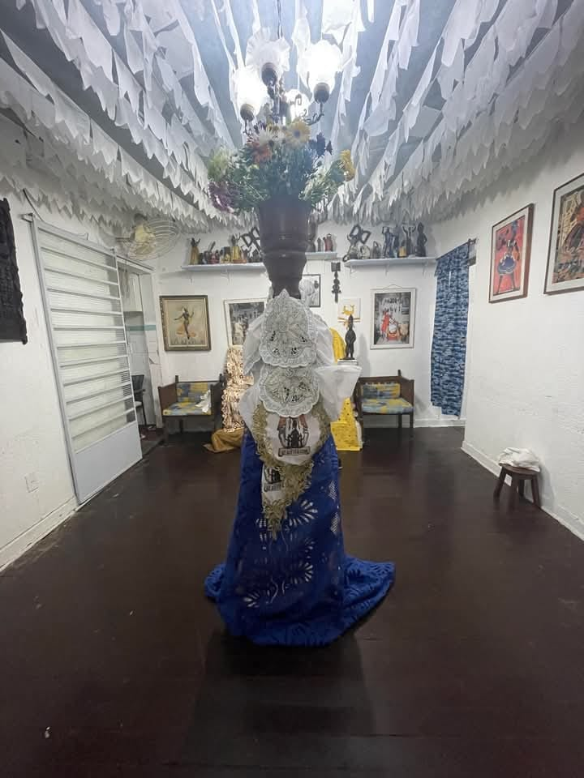

Pai Francisco

Terreiro
Ìyálórìṣà Jennifer de Ṣàngó

O Instituto Afro Ilê Asè Iyá Osun é um importante centro de tradição religiosa e cultural do Candomblé, fundado sob a liderança do Bàbálòrìṣà Francisco de Òṣun, conhecido também como Pai Francisco, figura de grande respeito e importância nas religiões afro-brasileiras. Dedicou-se a sua vida à preservação e disseminação das tradições de matriz africana, com um foco especial nos ensinamentos e práticas relacionadas à divindade Oxum. O Instituto foi fundado com o objetivo de promover a preservação das tradições religiosas e culturais do Candomblé, além de atuar como um espaço de fortalecimento comunitário. Pai Francisco, com sua vasta experiência e profunda conexão com a espiritualidade, desempenhou um papel crucial na construção desse legado. Oxum, orixá regente do Instituto, simboliza o amor, a prosperidade, a fertilidade e a sabedoria. Pai Francisco canalizou os valores dessa divindade em suas ações, criando um espaço que não apenas celebra a religião, mas também educa e empodera as pessoas da comunidade. Pai Francisco foi um zelador incansável da cultura afro-brasileira. Ele promoveu: Educação religiosa: Ensinou a importância dos rituais e dos fundamentos do Candomblé, respeitando a ancestralidade e a espiritualidade dos povos africanos; Ações sociais: O Instituto, sob sua liderança, também desenvolveu projetos sociais, oferecendo apoio às populações vulneráveis da região; Fortalecimento cultural: Por meio de festivais, oficinas e celebrações, o Instituto mantém vivas as tradições e amplia o reconhecimento da cultura afro-brasileira. O trabalho de Pai Francisco no Ilê Asè Iyá Osun contribuiu significativamente para a valorização do Candomblé e da cultura afro-brasileira. Seu legado é preservado tanto nos ensinamentos que deixou quanto nas ações do Instituto, que continua sendo um espaço de resistência cultural e espiritual. O Bàbálòrìṣà Francisco de Osun nos deixou em Maio de 2022, deixando o seu legado e sua herança para a sua filha Ìyálórìṣà Jennifer de Ṣàngó.